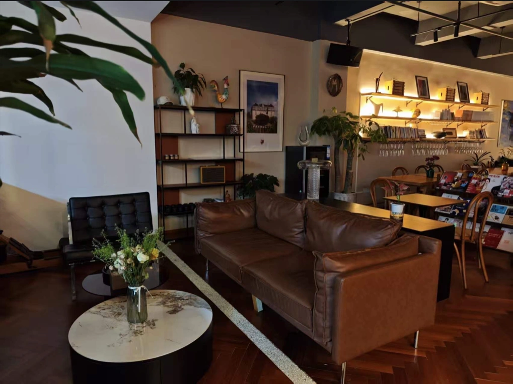

把你的经验，
用在适合的项目里。
欢迎认证 FDE、AI 销售顾问、独立开发者、OPC 与实施团队。无论擅长系统集成、知识库工作流还是现场实施与方案讲解，都可以带着自己的实践经验认识我们。
FDE（前线部署工程师）：深入业务现场，帮助产品落地的工程伙伴。我们分别了解具体执行人、实际经验与档期。查看 FDE 6 大能力模块与认证标准 →
生成我的经验沟通提纲上下闻 · AI 交付伙伴计划
连接需要补充实施力量的 AI 产品与解决方案服务商，
与愿意把事情做成的 FDE 个人和交付团队。
上接企业与渠道需求，下连认证 FDE 与实施人才，在交流与实战中达成交付。
CONNECT THE RIGHT PEOPLE.
01 / THE PARTNER PROGRAM (CHOOSE YOUR SIDE)
先选择你的角色视角，展开对应的协作模式与对接流程。
我们从具体任务开始，连接彼此需要的能力。
欢迎认证 FDE、AI 销售顾问、独立开发者、OPC 与实施团队。无论擅长系统集成、知识库工作流还是现场实施与方案讲解，都可以带着自己的实践经验认识我们。
FDE（前线部署工程师）：深入业务现场，帮助产品落地的工程伙伴。我们分别了解具体执行人、实际经验与档期。查看 FDE 6 大能力模块与认证标准 →
生成我的经验沟通提纲如果你为企业客户交付 AI 产品、咨询或培训方案，已有具体任务，需要补充现场或远程实施伙伴（支持背靠背分包、人天派驻或联合体交付），可以先和我们聊一聊。
02 / WHERE WE CAN START
点击左侧切换实施方向，在卡片内可按需展开「对接前确认清单」。
KNOWLEDGE & AGENTS
从文档整理、检索评估，到业务助手部署与使用交接，关注真实使用中的问题。
需共同确认：资料授权范围、所基于的产品或模型版本、私有/云端部署环境、实际业务使用者角色，以及量化验收方式。
WORKFLOWS & AUTOMATION
围绕一个具体业务环节，连接工具与人工确认，保留异常处理和维护方式。
需共同确认：标准输入输出格式、第三方工具账号权限、报错时的异常人工接管机制，以及对接的业务负责人。
INTEGRATION & ADOPTION
协助产品与现有业务系统连接，完成测试、使用说明和必要的实施交接。
需共同确认：现有系统接口文档完整性、独立测试环境、安全访问权限审批，以及产品方二线技术支持响应机制。
首批合作需求梳理中（先锁需求，再配供给）任务确认并获得许可后，再向适配的伙伴介绍。现在可以先联系运营交流经验与意向。
认识一下03 / HOW WE WORK (STEP-BY-STEP)
点击下方 4 个阶段，了解人工沟通、私下核实与定向介绍的每一步细节。
在下方联系区选择你的身份并复制沟通提纲，联系上下闻运营，介绍你的实际经验、擅长产品方向、所在城市和近期可用档期。
申请伙伴计划不收取费用。具体合作与服务费用另行确认；表达意向不代表审核通过或获得派单。

REAL PEOPLE. REAL CONNECTIONS.04 / OUR COMMUNITY
上下闻从 AI 实践交流开始。在线上讨论，也在线下相见，分享作品、复盘方法，认识正在探索的人。
无论是否参与交付合作，都欢迎你继续交流。社区资料不会自动加入商业伙伴名单。
05 / LET’S CONNECT (2-STEP CONNECT)
第 1 步：选择你的身份生成沟通提纲 → 第 2 步：复制提纲并在右侧添加运营微信。
提纲仅在本页生成。复制后由你自行编辑、发送；本页不接收或保存申请。初次沟通请勿提供源码、生产数据、密钥或证件。了解资料如何使用 ↗
A FEW THINGS TO KNOW
目前正在与合作方梳理首批需求。具体任务经核实并获准分享后，再向适配且愿意参与的伙伴介绍。联系运营或表达意向不等于获得派单。
可以。我们会分别了解个人或团队的实际执行人、相关案例、擅长产品与方向、城市和档期。参加过活动或购买过课程，不会自动成为能力证明。
先联系运营，沟通一个具体任务：目标、范围、时间、预算、产品支持和验收方式。共同确认后再寻找合适的实施伙伴，不必一开始提交完整客户资料。
申请伙伴计划免费。平台服务与实施工作分别明确费用及责任，启动前单独确认。现阶段实施款由合作双方按约直接结算，上下闻不在线代收项目全款。
不会自动公开。运营先私下了解必要信息，向具体合作方介绍前会确认你的参与意愿与可分享范围。你可以通过运营渠道提出更正、停止推荐或删除请求。